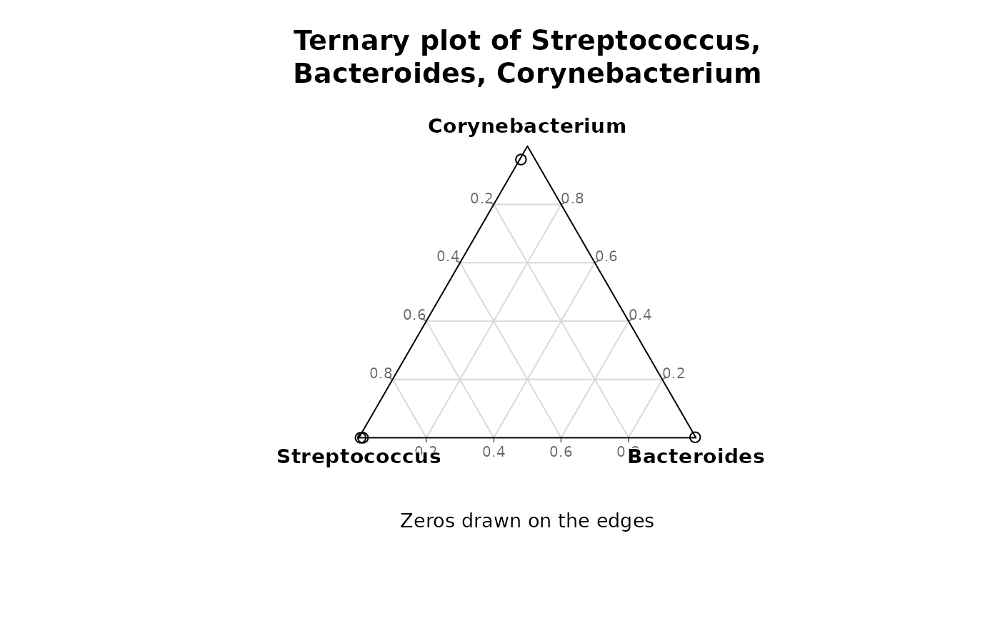
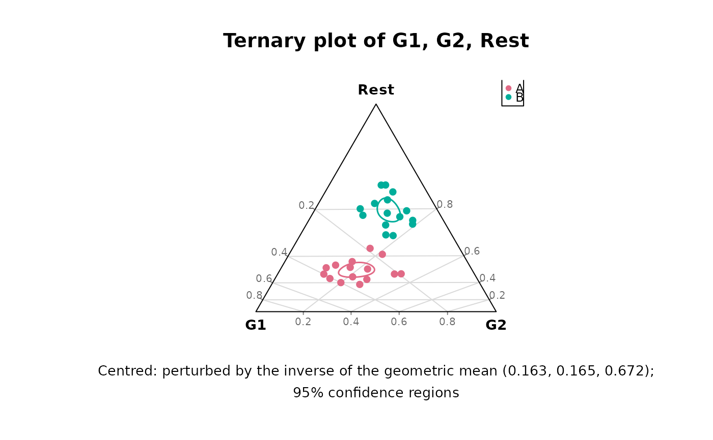
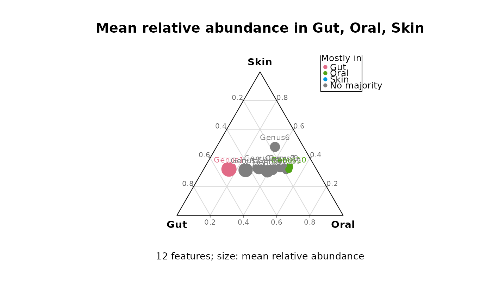

Draws three-part compositions in a ternary diagram: an equilateral triangle whose vertices are the pure parts, where each point's distance from an edge is its share of the part at the opposite vertex. It has two modes:
Usage
ternary_plot(
counts,
parts = NULL,
groups = NULL,
data = NULL,
margin = 1L,
pseudocount = NULL,
center = FALSE,
ellipses = "none",
conf_level = 0.95,
grid = TRUE,
labels = 10,
legend = "topright",
col = NULL,
pch = NULL,
...
)Arguments
- counts
A count table (samples \(\times\) features), or proportions; see Input Types.
- parts
Samples mode's three parts, in vertex order (bottom left, bottom right, top):
a vector selecting exactly 3 features, by name, 1-based index, or a logical vector with one value per feature; or
a list of 3 such selectors, whose features are summed into each part (amalgamation). One element may be
NA, for every feature in neither of the other two.
The parts are labelled with the list's names, else the features' names (
"Other"for anNApart,"Part 2"for an unnamed part of several features). No feature may be in two parts. DefaultNULL: features mode.- groups
The samples' groups: the name of a column of
data, or a vector with one value per sample (matched to the samples by name when both are named, as forpermanova()). In samples mode they colour the points, with a legend, and give one ellipse each; a numeric vector gives a colour gradient, and no ellipses. In features mode, required, with exactly 3 values or levels (NAis in none): the vertices, in the order of a factor's levels, else sorted.- data
A data frame of sample metadata, with one row per sample (matched by row name, else in order), when
groupsnames one of its columns.- margin
The margin containing samples.
1if samples are rows,2if samples are columns. Ignored whencountsis a special object class (e.g.phyloseq). Default:1- pseudocount
Samples mode, with
center = TRUEorellipses: added to each of the three part sums before taking logs. DefaultNULL, by the rule every log-ratio method in ecodive shares: none whencountshas no zeros, else half its smallest non-zero value (with a warning). It is added to the points too, so that they match the ellipses. Not used otherwise: zeros are then drawn on the edges.- center
Samples mode: whether to centre the points, perturbing each by the inverse of their geometric mean so that it moves to the middle of the triangle (see Centring). The gridlines are perturbed alike, and still read in the original proportions. Default
FALSE.- ellipses
Samples mode:
"none"(the default),"confidence"for a confidence region of each group's mean, or"prediction"for a region that holds a new sample of the group, atconf_level(see Ellipses). Withoutgroups, one for all the samples.- conf_level
The confidence level of
ellipses, strictly between 0 and 1. Default0.95.- grid
Whether to draw gridlines at proportions 0.2, 0.4, 0.6 and 0.8 of each part, labelled on the edge they meet. Default
TRUE.- labels
Features mode: how many features to name, the most abundant first: a number,
Inf(orTRUE) for all, or0(orFALSE) for none. Default10. Not used in samples mode.- legend
Where to put the legend: a keyword for
graphics::legend(), such as"topright"(the default) or"topleft", orNULLfor none.- col
The points' colours. Samples mode: as for
plot.ecodive_ord(); withoutgroups, one colour or one per sample; with them, one per group (in order, or named by group), or the colours of a numeric gradient. Features mode: one colour for all, one per feature ofcounts, or colours named by feature to replace those features' defaults (to mark the results ofda_test(), say). Withcol, features mode draws no legend.- pch
The points' symbols, as for
plot(). Default1(open circles), or16(filled circles) withgroupsand in features mode.- ...
Passed on to
graphics::plot.default(), which sets up the plot, such asmainorsub;cex,lwdandbgare passed tographics::points()instead. They replace the defaults.
Value
Invisibly, a data frame with one row per point (sample or
feature): the three closed proportions as drawn (centred, with center = TRUE), named after the parts or groups; xandy, the point's coordinates; and group(samples mode, withgroups) or abundance`
(features mode: the mean relative abundance that sizes the point). Its
attributes:
mode:"samples"or"features".center: the centre \(g\) that was removed, named by part, orNULL.pseudocount: the pseudocount added to the part sums (0for none).ellipses: a list with one matrix per drawn region, named by group ("all"withoutgroups): 200 points with the three proportions,xandyas columns. Empty without ellipses.
Details
Samples mode (
partsgiven): one point per sample, at its three-part subcomposition, such as three phyla, or Bacteroidota, Bacillota and everything else. The points can be centred (center = TRUE) and given confidence or prediction regions (ellipses), per group.Features mode (
parts = NULL): one point per feature, at its mean relative abundance in each of three sample groups (groups), sized by its overall abundance, to show where each feature is enriched.
The plot is drawn at once, and the drawn coordinates are returned
invisibly, as graphics::barplot() returns its bars' positions.
Coordinates. Each point is a composition \((p_1, p_2, p_3)\), closed to sum 1, drawn at $$x = p_2 + p_3 / 2, \quad y = \frac{\sqrt 3}{2} p_3,$$ so that part 1's vertex is at \((0, 0)\), part 2's at \((1, 0)\) and part 3's at \((1/2, \sqrt 3 / 2)\). A gridline is a line of constant share of one part: the labels along the bottom edge read part 2 (rising to the right), those along the right edge part 3 (rising upwards), and those along the left edge part 1 (rising downwards).
Samples mode. Each sample's counts are summed over each part's features, and the three sums closed: \(p_{ik} = y_{ik} / \sum_k y_{ik}\). Summing features (amalgamation) is not a log-ratio operation: the log ratios of a sum are not those of its members. But it is what a plot of phyla means, and the other parts' proportions are unchanged by it. Samples whose three parts are all zero have no point, and are left out with a warning.
Centring. Microbiome subcompositions crowd against one vertex or edge, where the triangle's geometry hides their differences. Centring (von Eynatten, Pawlowsky-Glahn & Egozcue 2002) perturbs every sample by the inverse of the samples' centre \(g\), the closed geometric mean of each part, $$p'_i = C(p_{i1} / g_1, \; p_{i2} / g_2, \; p_{i3} / g_3), \quad g_k \propto \exp\left(\frac{1}{n} \sum_i \log p_{ik}\right),$$ with \(C\) the closure. This moves the centre to the middle of the triangle, and spreads the points, without changing any difference between two samples' log ratios: in Aitchison's geometry, perturbation is a translation. The gridlines are perturbed by the same \(g^{-1}\), so they become curves, which keep their ends on the edges and still mark the original proportions. The subtitle gives \(g\).
Ellipses. In the isometric log-ratio (ilr) coordinates
$$z_i = V \log p_i, \quad
V = \begin{pmatrix} 1/\sqrt 2 & -1/\sqrt 2 & 0 \\
1/\sqrt 6 & 1/\sqrt 6 & -2/\sqrt 6 \end{pmatrix}$$
(Egozcue et al. 2003), each group of \(m \ge 3\) samples, with mean
\(\bar z\) and covariance \(S\) (divisor \(m - 1\)), gets the
ellipse \((z - \bar z)^\top S^{-1} (z - \bar z) = r^2\), with
\(F\) the conf_level quantile of the F distribution on 2 and \(m
- 2\) degrees of freedom and
"confidence": \(r^2 = \frac{2 (m - 1)}{m (m - 2)} F\), Hotelling's \(T^2\) region for the mean;"prediction": \(r^2 = \frac{2 (m + 1)(m - 1)}{m (m - 2)} F\), a region for one new sample.
These assume that the log ratios are multivariate normal. The ellipse is drawn back in the triangle, \(p = C(\exp(V^\top z))\) at 200 points, centred as the points are. Straight lines in ilr coordinates are curves in the triangle, so the regions are closed curves, not ellipses, there. The choice of ilr basis does not change them. A group with fewer than 3 samples, or whose log ratios are collinear, gets none, with one warning naming them.
ggtern's geom_confidence_tern() draws a different curve: the
\(\chi^2_2\) contour of the samples, \(r^2 =\) qchisq(level, 2)
whatever \(m\) (checked from its output). That is the large-sample
limit of the prediction region, smaller for small groups, and not a region
for the mean. compositions::ellipses() draws the same quadratic form
with a radius the caller gives.
Features mode. Every sample is closed over all the features
(relative abundances). For feature \(j\), \(m_{jg}\) is its mean
relative abundance over the samples of group \(g\), and its point is
\(C(m_{j1}, m_{j2}, m_{j3})\): its share of the three groups' means.
Features absent from all three groups are left out (the subtitle counts
them), as are samples with no counts, and those whose group is NA.
Each point's size is proportional to the square root of the feature's
mean relative abundance over the three groups' samples (cex from 0.4
to 3). A point takes its group's colour when at least half its share is
in that group ("mostly in" it), and is grey otherwise. This is a visual
convention, not a test: give col to colour by differential abundance
instead. The labels most abundant features are named.
Same names in other packages
vcd::ternaryplot(), Ternary::TernaryPlot(),
robCompositions::ternaryDiag(), compositions::plot.acomp() and the
ggtern package draw ternary diagrams too. None of them is called
ternary_plot(), so none is masked.
Input Types
The counts parameter is designed to accept a simple numeric matrix, but
seamlessly supports objects from the following biological data packages:
phyloseqrbiomSummarizedExperimentTreeSummarizedExperiment
For large datasets, standard matrix operations may be slow. See
vignette('performance') for details on using optimized formats
(e.g. sparse matrices) and parallel processing.
References
Aitchison, J. (1986). The Statistical Analysis of Compositional Data. Chapman & Hall.
von Eynatten, H., Pawlowsky-Glahn, V., & Egozcue, J. J. (2002). Understanding perturbation on the simplex: a simple method to better visualize and interpret compositional data in ternary diagrams. Mathematical Geology, 34, 249-257. doi:10.1023/A:1014826205533
Egozcue, J. J., Pawlowsky-Glahn, V., Mateu-Figueras, G., & Barceló-Vidal, C. (2003). Isometric logratio transformations for compositional data analysis. Mathematical Geology, 35, 279-300. doi:10.1023/A:1023818214614
Hamilton, N. E., & Ferry, M. (2018). ggtern: ternary diagrams using ggplot2. Journal of Statistical Software, 87(3). doi:10.18637/jss.v087.c03
Examples
# Three genera of ex_counts (samples in rows).
ternary_plot(ex_counts, parts = c('Streptococcus', 'Bacteroides', 'Corynebacterium'))

# Two genera against everything else, in 30 samples of two groups,
# centred, with 95% confidence regions of each group's mean.
n <- 30; p <- 12
grp <- rep(c('A', 'B'), each = n / 2)
counts <- sapply(seq_len(p), function (j)
round(1000 * exp(-j / 3) * ifelse(grp == 'A', 1, j / 4) *
exp(sin(seq_len(n) * j) / 2)))
dimnames(counts) <- list(paste0('S', 1:n), paste0('Genus', 1:p))
res <- ternary_plot(
counts, parts = list(G1 = 'Genus1', G2 = 'Genus2', Rest = NA),
groups = grp, center = TRUE, ellipses = 'confidence' )

head(res)
#> G1 G2 Rest x y group
#> S1 0.5023334 0.3664622 0.1312044 0.4320644 0.1136264 A
#> S2 0.6269929 0.1923201 0.1806870 0.2826636 0.1564795 A
#> S3 0.5008748 0.2857926 0.2133327 0.3924589 0.1847515 A
#> S4 0.3043032 0.5133935 0.1823033 0.6045452 0.1578793 A
#> S5 0.3724060 0.3226441 0.3049499 0.4751191 0.2640944 A
#> S6 0.5135700 0.3187260 0.1677040 0.4025780 0.1452359 A
# Features mode: where each genus is most abundant, among 3 groups.
site <- rep(c('Gut', 'Skin', 'Oral'), each = n / 3)
ternary_plot(counts, groups = site)
